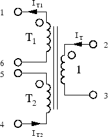
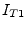
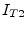
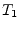
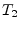
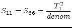
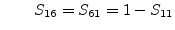
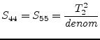
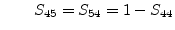
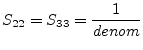

The ideal symmetrical transformer, as shown in fig.
9.3, is determined by the following equations which
introduce two more unknowns in the MNA matrix.
Figure 9.3:
ideal three winding transformer
|

|
The new unknown variables  and  must be considered by
the six remaining simple equations.
The matrix representation needs to be augmented by two more new rows
and their corresponding columns. For DC and AC simulation it is:
Using the port numbers depicted in fig. 9.3, the
scattering parameters of an ideal, symmetrical transformer with
voltage transformation ratio (number of turns)  and ,
respectively, writes as follows.
|  |
|
 |
(9.36) |
|  |
|
 |
(9.37) |
|  |
|
 |
(9.38) |
 |
(9.40) |
 |
(9.41) |
An ideal symmetrical transformer is noise free.
This document was generated by Stefan Jahn on 2007-12-30 using latex2html.